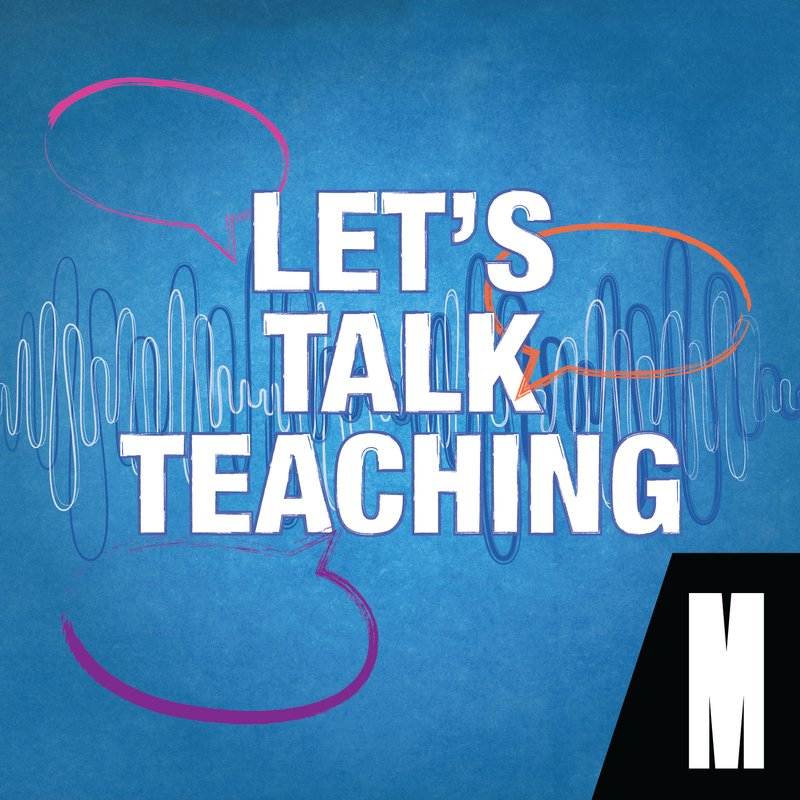

The podcast created for teachers, by teachers. Hosted by Associate Professor Rebecca Cooper from the Monash University Faculty of Education. Practical conversations about the classroom, the research, and the challenges Australian educators face every day.
Let's Talk Teaching is for educators, about educators, grounded in the real challenges of Australian classrooms.
Each episode, host Rebecca Cooper sits down with Monash researchers and practising teachers to unpack a single topic in depth. From trauma-informed practice to AI in education, game-based learning to behaviour, the manosphere to play in the early years.
Warm, practical, peer-to-peer. Not a lecture. Long-form interviews released in seasons, published by Monash University Faculty of Education.
End-to-end. One team, every stage of the build. So Bec can focus on the conversation, and Monash can focus on the outcome.
Host and guests in our Melbourne studio. Multi-cam, broadcast audio.
Topic framing and the 8-beat intro scripted with Bec and Monash.
Full edit and mix in DaVinci Resolve. Music beds, V1 and V2 delivery.
Episode titles, descriptions, timestamps, written to spec.
Simplecast, Spotify, Apple, Amazon. Artwork and social cutdowns delivered alongside.
From a six-episode pilot to one of our longest-running productions.
Built the show from the ground up with Monash Faculty of Education. Six-episode pilot season, host Rebecca Cooper, full studio production.
Format dialled. The 8-beat intro framework became the show's signature. Topics widened from differentiation and feedback to AI, the manosphere and game-based maths.
Double-batch production, edit pipeline migrated to DaVinci Resolve. Bigger topics, same peer-to-peer tone.
Every episode is recorded live in our Melbourne studio with host Rebecca Cooper and her guests. Drag to scroll.
"VIDPOD turn a room full of academics into a podcast that actually sounds like people. Four seasons in, and the bar keeps going up."
We build long-running branded podcasts end-to-end. Concept to distribution.
Say Hi